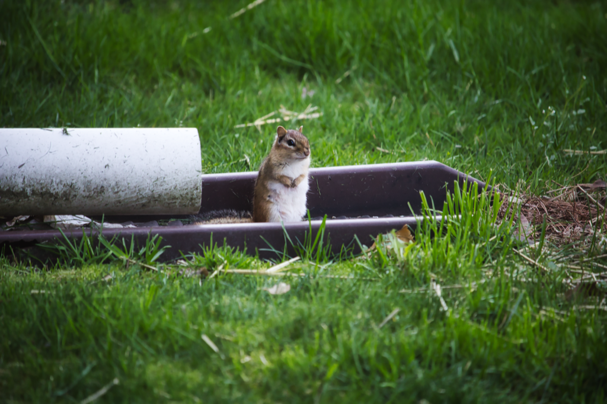

How to Write a Blog, or How I Write Mine
I dislike the word “blog.” - I think it feels ugly and odd, it is inherently off putting. Publishing an article? Wow, elegant, important, it's short form non fiction. A blog? Childish, a personal journal published online for self-sycophants. It sounds like something that happens to a bathtub drain. “Web log” is somehow worse, conjuring the image of a ship captain who learned HTML (which actually now sounds better to me as I write that). I avoided starting one for years partly on the strength of that aesthetic objection, which I now recognise as displacement behaviour for a deeper discomfort, the kind that asks: who do you think you are, putting your opinions on the internet? Do you think yourself important enough to be listened to instead of listening?
I think the long and short of answering that question, for me, is that I needed to confront another question first: who am I writing for? And ultimately, while I like others reading my blog and hearing their thoughts, praise or criticisms, I really do write the blog for myself so I can gather my thoughts and put them down somewhere. I also like my blog to be a non-static thing: I can go back and change my writings as I please - e.g. if I find a new argument that changes my perspective, or if I write an article predicting the future and it goes a different way, or if I just feel that I didn't do myself or the topic justice in retrospect, I can always edit, remove or add to them. The only authority I answer to on my blogs is myself after all, for judgement and change.
The questions you need to answer before you write anything
Before the first post, I had to sit with a few questions that felt trivially obvious but turned out not to be. Why am I doing this? Who is it for? What would success look like, and what would failure look like to me?
On the why: I write because, like many people, I have various topics I am interested in and want to explore, learn about, or just gather my thoughts on. For example, I am very interested in nootropics, the study on supplements, medications and practices that enhance cognitive function (memory, processing in one's own brain). I like the idea of just adding some additional turmeric and black pepper into meals I already make, and then when I apply my mind to a problem, it will be more efficient, easiest, and I'll remember tidbits better. Am I a medical doctor, a nutritionist, do I have a Ph.D. in neuropsychology, neuroplasticity or even an expert on the effects of sleep or exercise on the brain? Absolutely not. But I'm interested, and I can read a bunch of content from people who ARE and curate them along with my own thoughts right here. That way I can better distill my own thoughts, practices and I can even share it with friends more readily. That's a large part of why I write, and also why I don't stick to a single theme or topic (e.g. AI or data science, which I am actually an authority on). The process of turning a loose opinion into a paragraph that has to hold up under its own weight forces a kind of intellectual honesty that thinking alone does not. If I cannot explain something in prose, I probably don't understand it as well as I thought. That answer is sufficient on its own, and it does not require an audience.
On the who: the audience I write for is primarily myself, secondarily people interested in the topic, and tertially friends and family who are kind enough to show interest in my interests (I know my parents sometimes read my blogs despite having zero interest in, say, ISO 8601, or Patrick Rothfuss' writing output). Writing for a hypothetical reader who needs to be entertained or impressed produces a different kind of prose than writing to clarify your own thinking and then leaving the door open. Both have merit, and I do partially write for other people, but mostly in the sense that I don't want my boss or someone I respect in the field finding it, and finding me lacking - so it encourages me to be more robust in my research and while writing.
On success and failure: I do not measure success in page views. Or, I try not to. I measure it in whether the post says something I could not have said without the discipline of writing it, and whether I am willing to have my name on it in ten years. Failure, by that standard, is publishing something I do not believe or padding a post to a length it does not earn. Those criteria are entirely within my control, which is another way of saying that my success criteria do not depend on the internet (as a whole) agreeing with me. The internet will not always agree with you, trust me on that. Page views do give a little boost to my mood, but I'm usually pleased to find 10-15 people reading a post I published the day before. I have had a blog or two go minorly viral, which is fine, but other than the immediate "Huh, neat" and hearing some feedback, it's provided me less dopamine than I thought it might, and less than just cranking out my next post.
Process: reading first, writing second
The most reliable piece of writing advice I have encountered, across academic writing, blog posts, and even podcasting, is this: producting your media is a downstream activity. The quality of what comes out is almost entirely determined by the quality of what went in. The ratio I have settled on, only half-jokingly, is a hundred parts reading to one part writing, and I think it applies regardless of whether you are writing a PhD thesis, a podcast script, or a post about audiobooks.
This is not a prescription to read voraciously before every post (though also why not?). It is more that the instinct to sit down and write before you have genuinely absorbed enough about the subject to gather your thoughts. Readers can often tell when you have shallow opinions on topics. Opinion writing that has not been stress-tested against counterarguments, or technical writing that has not been informed by people who know more than you, tends to produce the same symptom: confident sentences that do not actually know what they are talking about, over generalize and leave a reader unsatisfied. Most importantly, if you are actually interested in the topic, you will naturally seek out more information before forming an opinion, so please don't write because you feel you should be writing. Write because you are starting a project, and are willing to learn and fortify your thoughts and opinions.
My process is approximate and not especially disciplined. I read around a topic until I have an opinion that feels load-bearing, meaning an opinion I can support with something more than vibes, and then I write a draft with bullet points or similar. There isn't some magic formula, in fact you'll find yourself jumping around, back and forth, reading interesting articles only to find they're irrelevant to the point you're making. But that's defining your article nicely, deciding what you're NOT including is deeply important. E.g., when I was writing about LLMs and ethics, I was tempted to discuss all ethics. I realized quickly I couldn't actually fit that into a blog post (or at least one that people might actually read), and I'd much rather make the topic several blog posts, i.e. LLMs in Education, GenAI in art (or stealing from), LLMs on cognitive function of various peoples, etc.
So: reading (which can also be YouTube videos, talking with colleagues, friends, family, etc.), then bullet points, then more reading, then move to another blog post I have thoughts on with a similar topic, then reading, then expanding bullet points, etc. Eventually I drop some of my photography, or other relevant images, think about some keywords, and then usually I rewrite my title completely. Then I publish it, notice errors, fix them, push to various social media (X, Threads, BSky, Instagram / FB story, linkedin if appropriate), then notice more errors, fix them, and try not to look at google analytics, and get excited when I see a single heart on Bluesky.
Dealing with criticism of all ilks
I wrote a post about Patrick Rothfuss and The Doors of Stone that, when I shared it, attracted a number of comments asserting it was AI-generated and that the quality was poor. It stings, even when you know the criticism is wrong, and even when you are not especially invested in the opinion of the person delivering it. Though an interesting insight I gained from some comments claiming I wrote with AI: because I work with AI constantly, and have when a researcher at Michigan State University, a data scientist at University of Michigan, and now in my role as a Senior Data Scientist elsewhere, I do wonder how much AI-speak leaks into my own vocabulary. There is emerging evidence that this happens in both writing and speech. The best framing I have seen for that concern is this piece in VICE on people starting to sound like ChatGPT. I hope I'm not being influenced too much, though inevitably we absorb what we read, but I also read a lot of books and papers so it's likely a mix of things I'm regurgitating and reformulating, so I appreciated that feedback in the end.
Criticism worth receiving tends to surface within the noise, and criticism not worth receiving can teach you something about the limits of your audience, or occasionally about your own prose. That Rothfuss post had sections I was uncertain about. The criticism did not identify those sections, but it prompted me to reread the post with fresh suspicion, and I found a few places where I had leaned on hedging language rather than committing to a point. The criticism was wrong about the diagnosis and accidentally useful about the symptom.
The harder thing to accept is that you cannot force people to read your work carefully. You also cannot force friends and family to be interested, and trying tends to produce the opposite of the intended effect. The people who matter will find the posts they find useful; the people who do not care will not, and pushing your writing at them builds resentment faster than it builds readership. You can be annoying on social media, you can be pushy to friends and family. Generally, if your writing is of interest they will read it.
If someone accuses you of using AI to write your work, and you did not, the only real response is to keep writing in a way that proves otherwise over time. Trying to argue the point in the comment section is undignified and usually futile. One thing worth keeping in mind: the accusation of AI use has become a generic criticism, deployed the way “formulaic” used to be deployed, meaning it often says more about the reader’s expectations than the writer’s process. Take it as data, not as verdict, and keep writing. AI tends to miss *flare* and nuance, your personal tone and voice should shine through your writing. Blogs, after all, are personal, so are a great opportunity to write and define your own voice.
What to write about
This is the question I get asked most often, and is not one I readily have an answer to. I suppose the best I can say is that it depends on your goals. If you want to have a blog filled with ads that rakes in revenue per click and per view, you probably want something attention grabbing, click bait-y, on recent news or something that is trendy, and you want to push it out at the perfect time of day for the perfect audience to optimize your views and $. However, if that sounds awful to you (it does to me), then you need to consider your goals for the blog: is it on a specific topic? Is it something that you can lean on "news" for, e.g. if you are writing a blog about new fantasy books, then your blogs could be reviews of books, or your thoughts on what will happen in the next book, or on providing journalist style coverage of news. That also doesn't apply to me, though I might stray into that territory as I please occasionally.
On facts: if you are writing about something where facts are in play, cite people who know more than you. Not out of academic formality, but because the alternative is to ask readers to trust your memory and judgement on things that can be checked. I try to link to sources or name the people I am drawing on wherever I make a factual claim. I am not always as diligent about this as I should be, but my instinct is right, I think.
On topics: I have no formal rules about what I cover. I write about books, data science, where I grew up, audiobooks, AI ethics, and anything else I have accumulated enough thought about to fill a post. The only filter I apply is one I call the four-audience test, borrowed from the idea of writing something you would be comfortable having read by a friend, a foe, a family member, and your boss. If a post fails that test, it either needs to be rewritten or left in the drafts folder. That is not a rule about being inoffensive: it is a rule about your own motives that you would not regret the post existing in a world where all four of those people read it on the same day. Which they very well may. I am a blogging generalist, and I do whatever I fancy, and I think that is fun and encouraging, and looking at my recent post history of a new blog every few days for 2 months on average, I think it is encouraging to me. I don't know if it's sustainable, but I'm also not putting weighty expectations upon myself, I will write when I feel like it, publish in the same mindset, and take breaks if I please. Normally I only take longer to publish a post when the post requires more reading, e.g. my discussion on AI ethics had a hefty number of references as I wanted to make sure I was sharing facts and not feelings when it came to reality, but sharing my emotions about those, instead.
On length: I have no strict rules, but I try to be concise and purposeful. Long posts are fine if the content justifies it, but brevity is often more impactful.
On style: I aim for clarity and readability, avoiding jargon and overly complex sentences. My goal is to communicate ideas effectively, rather than to impress with vocabulary. If you want to be impressed with technical jargon, go look at my papers. Stay here if you want to read something I write from my own judgement and not adhering to the standards of others.
Ultimately, writing is what you make of it. Some painters paint for income, others for joy, others to explore trauma, and more. Cooks do so for income, or for the joy of cooking, or instead the joy of eating, or even just to provide for their family and save money. Writing is what you make of it. If it's how you want to challenge yourself, gather your thoughts into a single page, build your own knowledge on topics of interest, or simply express yourself, the reason for it is your own and the only person you can decide if its worth doing is you.
Resources and tools
A short list of things I have found genuinely useful, rather than a comprehensive guide to tools that exist:
On writing itself: William Zinsser’s On Writing Well is the book I recommend, because it addresses the problems writers at every level actually have: prose that is too long, too hedged, too fond of its own vocabulary. Joseph Williams’ Style: Lessons in Clarity and Grace is more systematic and more demanding, and worth reading if Zinsser leaves you wanting a framework rather than principles. Ultimately, the best tool for learning to write is to read a lot and practice writing a lot, I like the 100:1 rule here, too.
On AI as a writing tool: I use local language models for review rather than composition. An AI reviewer will catch structural problems, identify where hedging language has crept in, and flag sentences that are technically grammatical but doing no useful work, and whatever else you might want an outside perspective on. An AI writer produces prose that is grammatically fine and intellectually shallow: it will fill a page with sentences that sound like they are saying something without committing to a position. The insight density of AI-written text is low in a way that is difficult to locate sentence by sentence but immediately apparent across a whole post.
I wrote about this more directly in my post on building a second brain with local LLMs: the short version is that a local model running on your own hardware is preferable to a cloud service for review work, both for privacy and because it changes how you interact with the tool. Chatting through a draft with a local model, asking it to challenge your assumptions or identify where you have asserted something without supporting it, is a different activity to asking it to write the post for you. The former produces better writing; the latter produces a post that will read like a post that asked an AI to write it, which is a recognisable and increasingly unflattering register, and most importantly, it will remove the entire purpose of writing a blog: to write.
On where to blog: I will write a separate post about hosting a personal website and blog, covering the technical options from the simplest to the most involved. For now: the platform choice matters less than whether you control the content. Substack, Medium, and similar services offer distribution but extract a degree of control over presentation and, in some cases, discoverability. I enjoy doing it on my own website because I enjoy using this for 1) a way to present my technical prowess (this is my website, I built it myself, I write the blog posts in pure HTML and the functionality (e.g. the blog filters on blog.html, or the search functionality) is custom-built by me, and the jargon hover-over function), 2) complete control over the design and layout, and 3) the satisfaction of maintaining a personal space on the internet that is uniquely and utterly yours, and 4) it won't disappear. Even if my website provider gets shut down, I have all of this on GitHub. If GitHub shuts down, I have the local repo on my machine. It's mine through and through, and no terms and conditions of any website have claim over my content. Less people will see my posts than if I used medium, but then it would just be a blog, not also a website. I like to be able to point towards my other projects and interests (e.g. my photography gallery, or my goodreads stats project).
On structure and components: I keep a template reference document for the reusable patterns I have built into this blog, covering things like photo captions, expandable FAQ sections, timelines, and glossary boxes. If you are building your own static site, a similar document saves considerable time when writing the tenth post, and a local LM can help you build components quickly without the ethical or privacy concerns using something like ChatGPT - and in my opinion it leaves the creative control in your hands, but leaves the grunt work to the LLM.
Privacy, anonymity, and platform
Blogging is putting yourself on the record. What you share and under what name are difficult to undo, so deep consideration is required. I write under my own name because I am writing about things I would stand behind in any other context, but that is a choice that carries tradeoffs: professional visibility, searchability, and the permanent internet archive of your younger opinions all come with it. I also made a decision early in my life about my privacy online: I can't be doxxed so easily because I'm already open about who I am. You can google me, you can find my website, my social media and my linktree.
Anonymity is a legitimate option, especially if you are writing about topics where your professional identity and your personal opinions are in tension. The tradeoff is that anonymous writing carries less authority: readers cannot evaluate your credibility the way they can when you attach a name and a record to a claim. That may not matter for what you are writing, but it is worth knowing.
On platform: writing on your own website is, by internet standards, a niche activity, and you should go in knowing that the audience for a personal site built on a custom domain and hosted on GitHub Pages is not going to grow the way a Substack with SEO-optimised titles might. That is fine, and may even be preferable, depending on what you are writing for. I find the small audience clarifying: nobody is reading this because an algorithm pushed it at them, so the people who do find it tend to be the people it was written for. Hi friend.
The audience question brings me back to where I started. Are you writing for an audience, for yourself, both? Whatever your answer, the only way to write a blog is to write a blog, whether you call it a blog, web log or a journal. I think it's a great way to keep our dopamine-addicted brains alive and engaged, and it's a tool for you, and may help someone else along the way, too.
